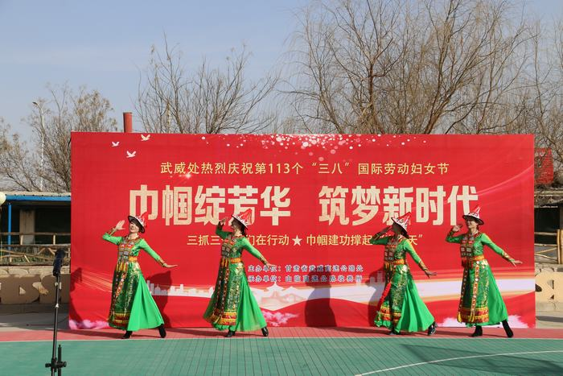
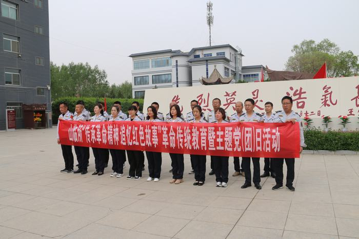

 为促进基层党建工作再创新高，7月20日下午，山临所党支部召开了第三季度党员大会暨专题党课。会议首先由支部委员以“凝心铸魂强党性 锤炼品格建新功”为主题为广大党员同志上了一堂生动的专题党课，党课主要从理论逻辑、实践逻辑、现实逻辑等三个方面深入浅出阐述了开展主题教育活动的逻辑考量，要求广大党员干部职工切实把习近平新时代中国特色社会主义思想转化为坚定理想、锤炼党性和指导实践、推动工作的强大力量。 其次紧紧围绕“一单位一品牌、一支部一特色、一党小组一亮点”党建品牌创建工作，进一步明确了推进品牌创建的各项具体措施，增强了党组织的吸引力、凝聚力和战斗力。
随后，以党建+业务共融互促为目的，组织召开了站股长廉政座谈和集体谈话，要求全所7个党小组78名党员牢牢把握收费主责主业，突出“以点带面、支部引领”，始终把讲政治摆在首位、贯穿始终，倡导将收费保畅融入“三会一课”、主题党日等活动中，用更新理念破解“两张皮”问题，强化“学中干、干中学”，进一步增强推动基层党建和收费业务工作深度融合的思想自觉、政治自觉和行动自觉，巩固深化党的二十大精神、主题教育实践的学习教育成效。
会后，全体党员纷纷表示，在接下来的工作中，一定坚持把学习宣传贯彻党的二十大精神和主题教育作为当前和今后一段时期的头等大事，以更高标准严格要求自己，先学一步、学深一步，切实发挥党员干部示范引领带头作用。